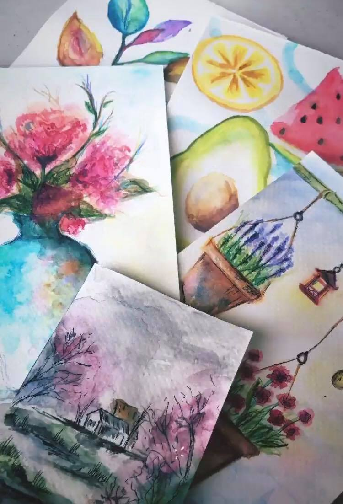
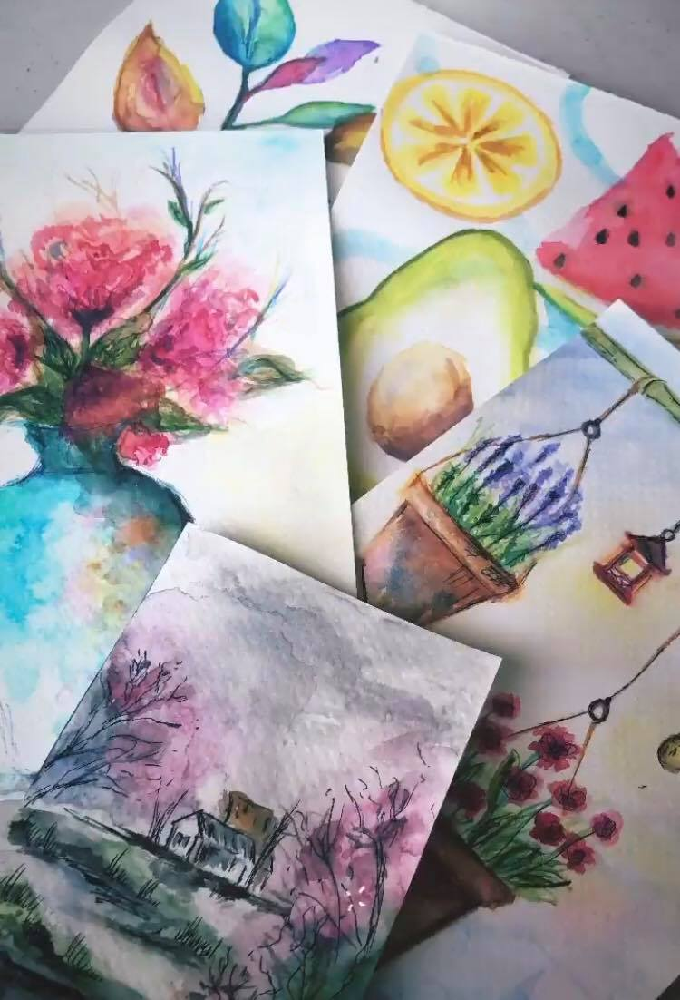
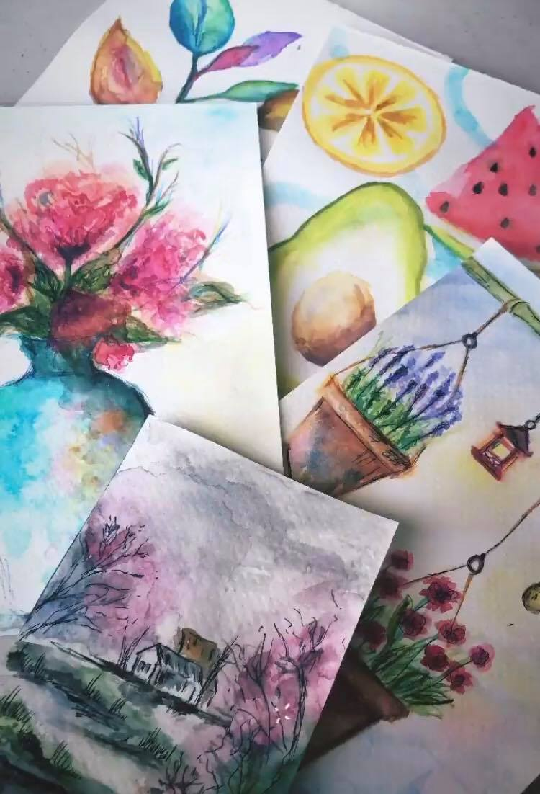

Most pieces below are from my AP Drawing portfolio concentration years ago on the enhancement of mundane objects through unique perspectives in angle and coloration. I have not had much time to truly commit to a piece since college but will be posting more sketches and small watercolor pieces!

All photos are taken with an iPhone. Although I do not consider myself a great photographer, I love capturing simple, casual moments which allows me to appreciate the world around me. Check out my VSCO for more updates!
VSCO


I really started to enjoy cooking when I moved off campus for my 3rd year of college. There is nothing more therapeutic to me than blasting music while prepping dinner to share with my roommates after a stressful exam. I definitely do not follow recipes … kind of just hope for the best.